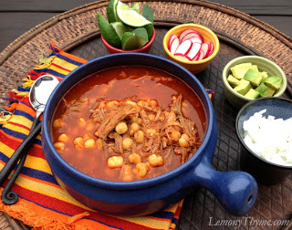

Platillos Mexicanos
Barbacoa
La Barbacoa es un platillo típico del centro del país, en México consideramos este platillo como un fiel acompañante de nuestra gastronomía, su preparación en hornos de tierra sellados con pencas de Maguey es una tradición pre-colombina, los lugares más conocidos para comer este platillo son: Hidalgo, Querétaro y Tlaxcala.
Enchiladas
Aunque este platillo típico mexicano se prepare en muchas partes del mundo, es en nuestro país específicamente donde tiene el sabor mágico que les da ser preparadas aquí. ¿En qué consisten las ricas enchiladas? Primero, pueden ser de mole, verdes, rojas, de frijol, suizas, potosinas, mineras, todas tienen un sabor característico y especial. Las enchiladas consisten en tortillas suaves de maíz rellenas de res, pollo, pavo o cerdo, que se hornean para quedar levemente crocantes. Encima se complementan con alguna salsa, que puede ser de frijoles o chile y también les ponemos queso, crema o cebolla, y se acompañan con algunas
Mole
La historia del mole se remonta a la época precolombina. Se narra que los aztecas preparaban para los grandes señores un platillo complejo llamado "mulli", que significa potaje o mezcla. El Mole consiste principalmente en una salsa de una gran variedad de ingredientes vertida sobre piezas de carne que pueden ser desde un Guajolote hasta Cerdo.
Pozole
El pozole es un platillo difundido en casi todo el país, los más famosos son los de Jalisco, Michoacán, Tepic, Colima, Guanajuato y Guerrero. Entre los que se destacan, desde luego, el pozole blanco que es el básico, aunque también existen sus variantes en verde y rojo, curiosamente los tres colores de la bandera de México.
La especialidad de este plato es que los granos de maíz utilizados son de una variedad particular de grano grande llamado cacahuacintle, y que tales granos son precocidos en una solución ligera de agua con hidróxido de calcio (cal) conocida como nixtamalización – el mismo proceso utilizado en el continente americano para la elaboración de la tortilla.

Tacos
El taco, como cualquier otra manifestación de cultura culinaria de México está directamente asociado a los ingredientes utilizados en cada región geográfica del país. Lo cierto es que en los últimos años los tacos se han convertido en uno de los platillos más reconocidos de México en el mundo.
En la actualidad los tacos están extendidos mundialmente como un tipo de comida rápida. Sin embargo, lo que se conoce como taco a nivel internacional son los tacos de influencia estadounidense que difieren bastante en ingredientes y preparación de los mexicanos y provienen de la comida Tex-Mex, lo que influye en la forma de preparación y sabor.
De igual forma, aunque el taco estándar se hace con tortilla de algún tipo, en restaurantes mexicanos de alta gastronomía o cocina fusión, la tortilla puede ser sustituida por lechuga,
Tamales
Según los expertos México es el país con más variedad de tamales de todo el mundo. Cada estado o ciudad o pueblo tiene decenas de tamales. Se calcula que la variedad de tamales podría alcanzar casi 5,000 en todo México. Se llaman de muchas formas: vaporcitos, nacatamales, chuchitos, chanchamitos, padzitos, estos es, tamales mexicanos.
En ningún país existe tanta diversidad de tamales como en México. Cada región y estado tiene ciertos tipos de tamales, tantos que su variedad se calcula entre 500 y 5,000 en todo el país.Es un platillo muy popular y algunos expertos estiman el consumo de tamales en cientos de millones anuales.
Existen diferentes tipos de tamales, acontinuación se presentan algunos.
- -Tamal en salsa verde
- -Tamal Oaxaqueño
- -Tamales de Chaya
- -Tamal de dulce
- -Tamal corundas
- -Tamal Mucbil pollo
- -Tamal Canario
- -Tamal Zacahuil